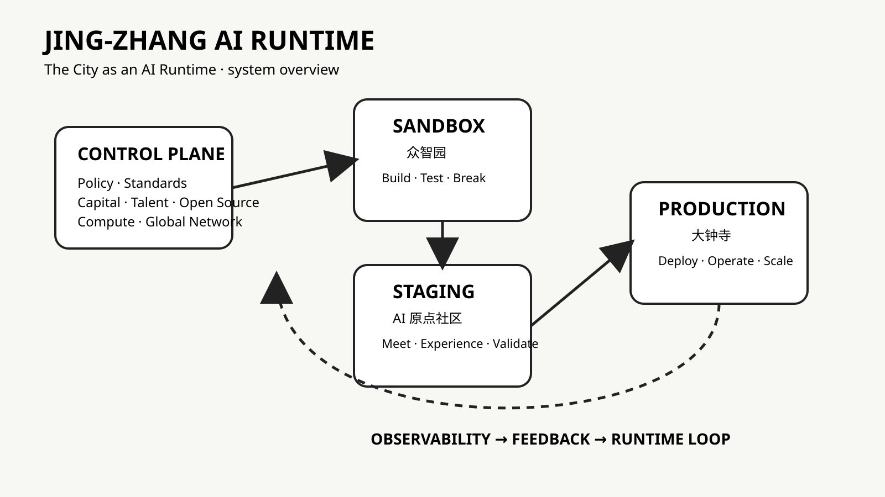

The City as an AI Runtime
The Jing-Zhang heritage public space forms the Runtime Spine connecting Sandbox, Staging and Production states.

All geometry is provisional and must not be treated as a statutory boundary. Recalculate after official data release.